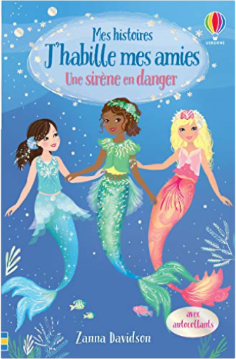

Books
Movies
Albums
Videogames
Games
BD
BD Camille
Blu-ray
Business
Camille
Comics
Cooking
Lego
Manga
Pauline
Photography
Star Wars
T'choupi
Travel
TV Shows
Un livre dont vous êtes le héro
Vinyl
Walt Disney
1
2
3
4
quel est ce légume ?
anne crausaz

Mes histoires J'habille mes amies, tome 3 : Une sirène en danger
Zanna Davidson
Alerte Rouge - L'Histoire du Film
walt disney
La Tour Eiffel se balade a Paris !
Mymi Doinet
Au lit, bébé licorne !
Rhiannon Fielding, Chris Chatterton
petit lapin blanc est malade
marie-france floury
petit lapin blanc va se coucher
marie-france floury
la moufle
robert giraud, olivier latik
La danse
Françoise de Guibert
Où est Charlie ? Le livre magique
Martin Handford
l'hiver de la famille Souris
Kazuo Iwamura
le pique-nique de la famille Souris
Kazuo Iwamura
1
2
3
4


 Made with Delicious Library Made with Delicious Library
Made with Delicious Library Made with Delicious Library